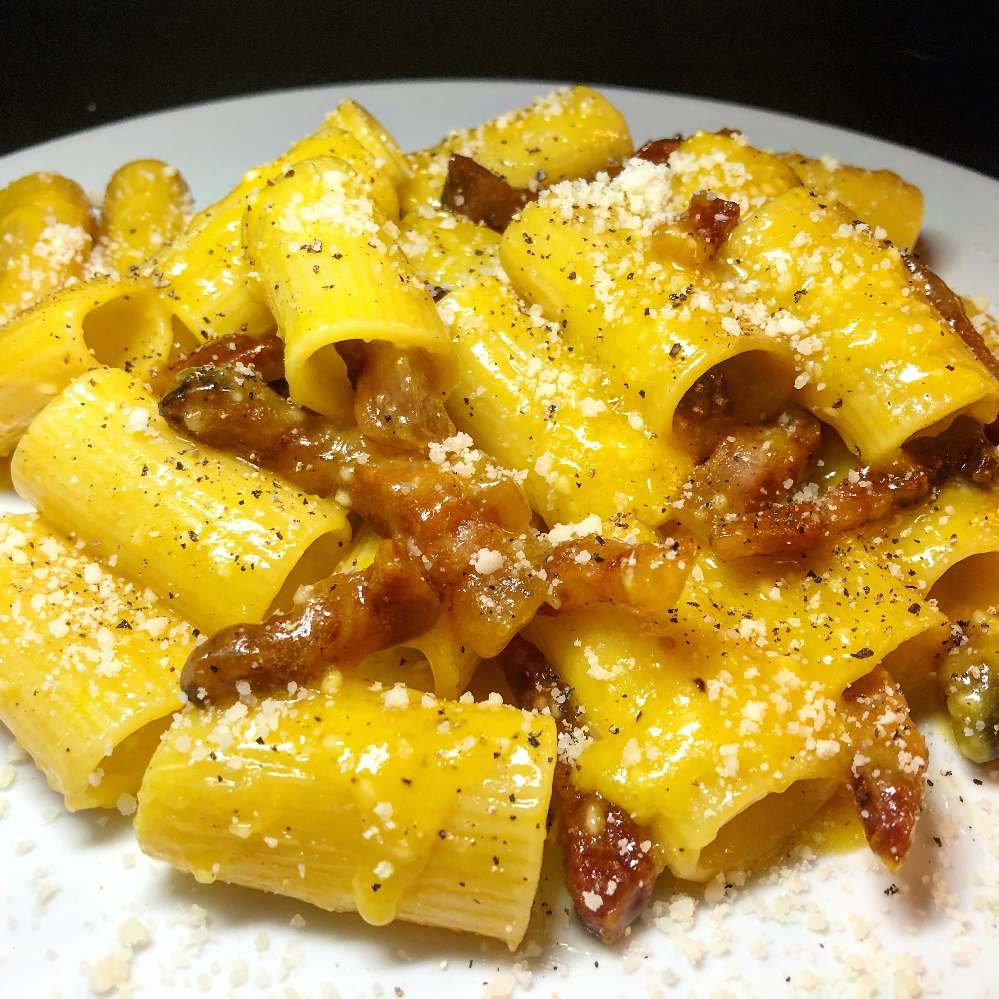

Rigatoni alla carbonara
An easy and classic recipe from roman tradition.
If you’ve had great carbonara, then you know that there’s nothing quite like the silky, creamy, savory
harmony of cheese, eggs, pasta, and guanciale. One of our favorite Italian comfort foods, this pasta dish is
absolutely timeless and an ultimate crowd-pleaser.
Ingredients
- 12 ounces rigatoni or spaghetti
- 2 Tbsp extra virgin olive oil
- 4-6 ounces guanciale
- 2 ounces pecorino romano or parmigiano-reggiano, plus more for serving
- 2 whole eggs
- 4 egg yolks
- kosher salt and fresh cracked pepper
Steps
- Bring a large pot of generously salted water to a boil.
- While the water is coming to a boil, prepare and cook the guanciale. Trim off the skin and cut into roughly
1/2 x 1/2 inch squares. Bring a large dutch oven to medium heat. Add olive oil and guanciale. Cook guanciale
until crisp and golden brown, about 7-8 minutes, turning guanciale as needed to evenly cook, and remove from
heat. Using a slotted spoon, remove guanciale from dutch oven and set aside. Keep rendered fat in the dutch
oven, about 1/4 cup. If fat rendered from pork exceeds this, discard and keep the 1/4 cup in dutch oven .
- Once water is boiling, add pasta. Cook until just barely al dente or a "hard al dente". This is oftentimes 1
or 2 minutes less than package instructions. Pasta should be cooked but still firm.
- While the pasta is cooking, prepare cheese and eggs. Finely grate 2 ounces of pecorino romano cheese and set
aside. Crack eggs/egg yolks into a medium-sized bowl and whisk eggs until smooth. Add grated cheese to the
eggs and whisk together. Just before the pasta is finished, remove 3/4 cup of pasta water from pot. Add 1/2
cup of pasta water to the egg/cheese mixture and whisk until smooth.
- Bring reserved fat/oil back to medium heat in the dutch oven. Once pasta is done cooking (barely al dente),
add it to dutch oven with fat. Gently toss together for about 30 seconds, integrating the pasta with the
guanciale and oil.
- Add egg/cheese mixture to the dutch oven and toss to incorporate with pasta. If the pasta seems too dry, you
may add more pasta water, a tablespoon at a time. If the pasta seems too thin, continue to cook over medium
heat for a minute or two, constantly tossing until it thickens (watch carefully, too much heat or too high
of heat will curdle your eggs). Once desired consistency is achieved (a silky, smooth coating) remove from
heat immediately. Taste pasta to make sure it has an adequate amount of salt, and add more salt and toss if
needed.
- Plate the pasta and top with a generous amount of fresh cracked pepper and pecorino romano. Divide crispy
guanciale evenly between plates and place on top of pasta. Serve immediately.